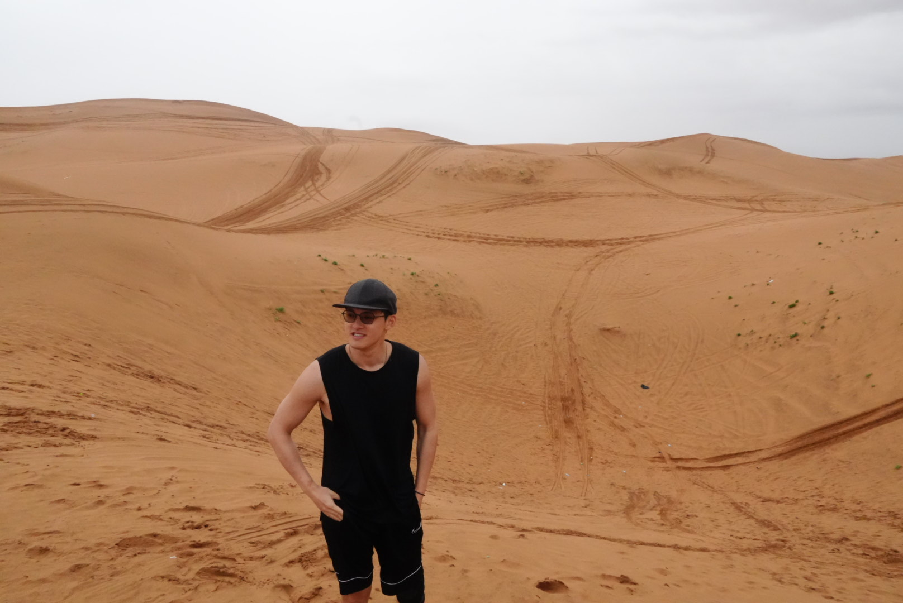

Purdue Electrical and Computer Engineering Graduate Student
Hello! I'm Yuan (Jack) Chang — a graduate student in Electrical and Computer Engineering at Purdue University, West Lafayette. I'm passionate about computers, technology, and innovation, and I'm always eager to explore new ideas both inside and outside the classroom. Outside of academics, I stay active through a variety of sports and hobbies — golfing, basketball, soccer, swimming, gym workouts — you name it! I'm currently seeking full-time opportunities or Ph.D. positions where I can continue growing and contributing to impactful projects.
Here are a few of the recent projects I've worked on:
We developed an IoT-based parking tracking system using an ESP32 microcontroller integrated with an SR04 ultrasonic sensor. The system was programmed with MicroPython and utilized its low-level BLE module to daisy-chain the sensors and connect them to a Raspberry Pi acting as a Linux-based router. Our design was successfully showcased at our university's Spark Challenge competition.
As an intern at OSW Chengdu — a startup branch of OSW Australia (a renewable energy resale company) — I developed an AI service agent that integrates a fine-tuned large language model (LLM) using LoRA/QLoRA for PDF-reading tasks, alongside a YOLOv11-based vision module. The unified system was packaged and deployed using Docker, with server-side API access for scalable inference.
Launching Soon!
"https://github.com/changyuan09"
📧 Email: chang658@purdue.edu
📍 Location: Purdue University, West Lafayette, IN
🌐 GitHub: jackchang